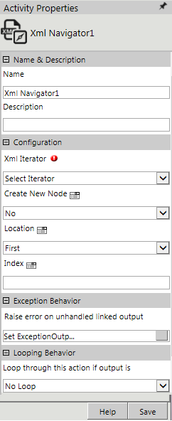
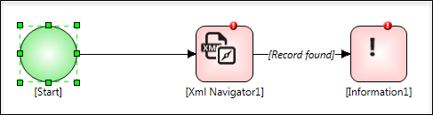
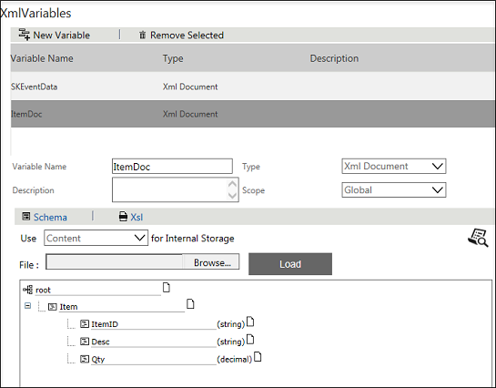
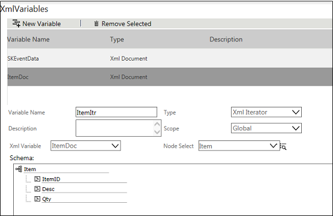
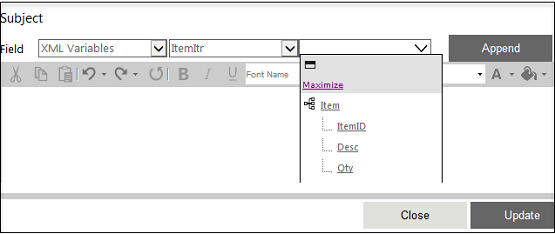

No
Activity description:
The XML Navigator is used to either locate or navigate to a specific record in a collection within an XMLIterator Variable. This activity enables identification of a specific record for execution of an activity or group of activities.
See also Example of XML Navigator Activity
Activity Properties:
The properties of the XML Navigator activity can be configured in the Activity Properties window for that activity.
To access Activity Properties, do one of the following:
Activity Properties for this activity are organized under:

Name & Description
Specify the name and description for the activity in this group.
Name - Enter the name for the activity.
Property Type: Optional (This property needs to be set only if necessary.)
Description - Enter a brief description for the activity.
Property Type: Optional (This property needs to be set only if necessary.)
Configuration
The Configuration group has properties for selection of the XMLIterator Variable to be looped through.
XMLIterator - Select the XML Iterator variable to be navigated. All XMLIterator variables as declared in Start activity are available for selection.
Property Type: Mandatory (This property must be set if the action is to be executed.)
Create New Node - This field defaults to No. Select Yes to create a new blank node at the specified location.
Property Type: Optional (This property needs to be set only if necessary.)
Location - This field identifies the location to be navigated to. It defaults to First. The options are:
First: Navigates to the first record in the collection.
Last: Navigates to the last record in the collection.
Next: Navigates to the next record based on the current location.
Previous: Navigates to the previous record based on current location.
Index: Navigates to the record identified in the Index field.
Property Type: Mandatory (This property must be set if the action is to be executed.)
Index - Enter the index number of the record to navigate to. This field is mandatory if the Location field is set to Index.
Property Type: Optional (This property needs to be set only if necessary.)
Looping Behavior
The property in the Looping Behavior group has been described below. You can use this property to specify the looping behavior of the activity.
Loop through this action if output is - This property is used to specify the condition for looping the activity by selecting an activity output from the drop down.
Property Type: Optional (This property needs to be set only if necessary.)
Activity outputs:
The XML Navigator Activity returns the following values -
No more records: Indicates that all records have been looped through
Record Found: Indicates that a record is found in the collection
Index out of bounds: Indicates that the index entry specified in the location does not exist
Example for XML Navigator
Consider already an XML file called Sample.XML is exists. The contents of it are as shown below.
<?xml version="1.0" encoding="utf-8"?>
<root>
<Item>
<itemdID>I001</itemdID>
<desc>some stuff1</desc>
<qty>10.20</qty>
</Item>
<Item>
<itemdID>I002</itemdID>
<desc>some other stuff2</desc>
<qty>20.20</qty>
</Item>
<Item>
<itemdID>I003</itemdID>
<desc>some more stuff3</desc>
<qty>30.20</qty>
</Item>
</root>
Step 1: Design a Workflow as shown in the below figure.

Step 2: In the Start Activity, declare two XML Variables.
Variable Name: ItemDoc, Type: XML Document and Scope: Global
Use Content for internal storage and browse the above created Sample.XML file and load it.

Variable Name: ItemItr,
Type: XML Iterator,
Scope: Global,
XML Variable: ItemDoc
Node Select: Item

Step 3: In the location property of XML Navigator Activity, select "Last". For the XML Iterator property, select the Iterator created that is, ItemItr. In the Information Activity, the ItemItr is displayed in Subject column of the work item.
Step 4: Click the Subject property of Information activity, following window will open.

Select XML Variable form the first drop-down. In the second drop-down, select the Iterator created, that is ItemItr. In the third drop-down, select the Item ID from the tree displayed. Click Append, and then click Update.
Step 5: On the link connecting XML Navigator Activity and Information Activity, select "Record Found".
Output:
The item ID will be displayed in the Subject Column of the Information in work item.